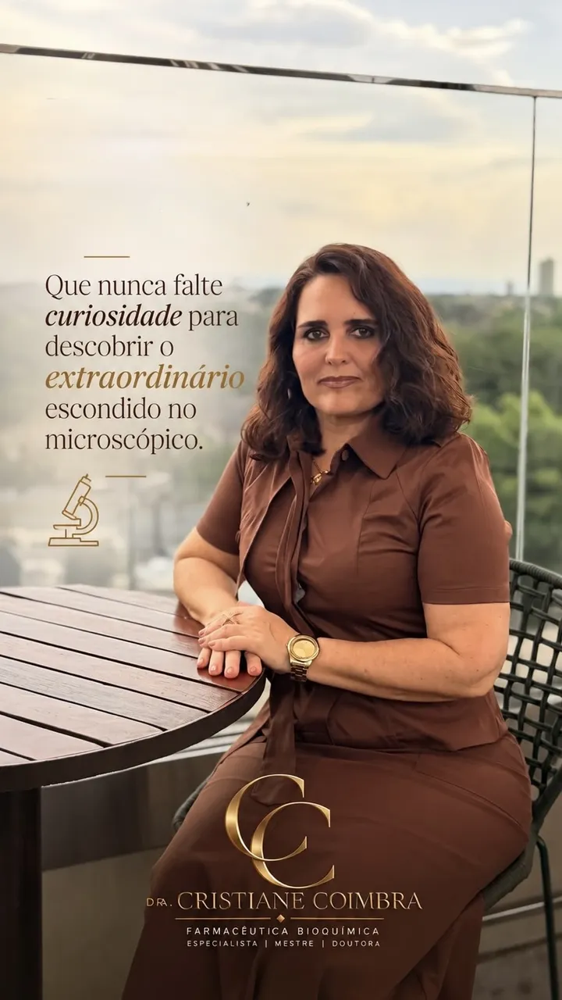
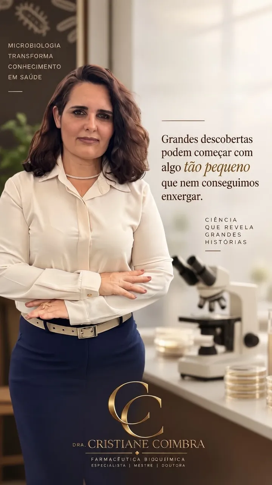
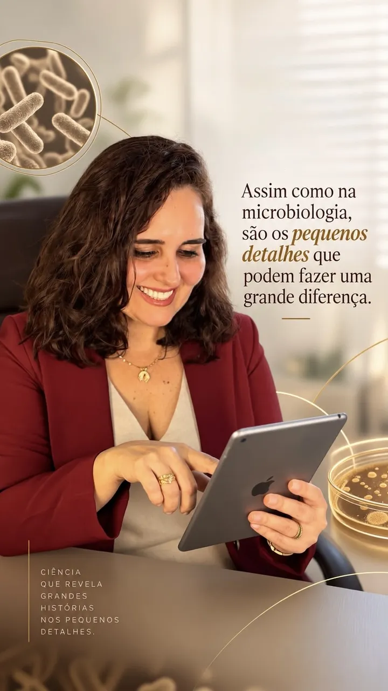
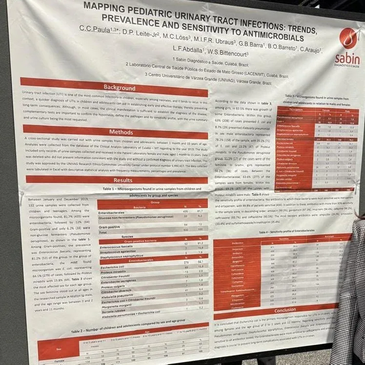
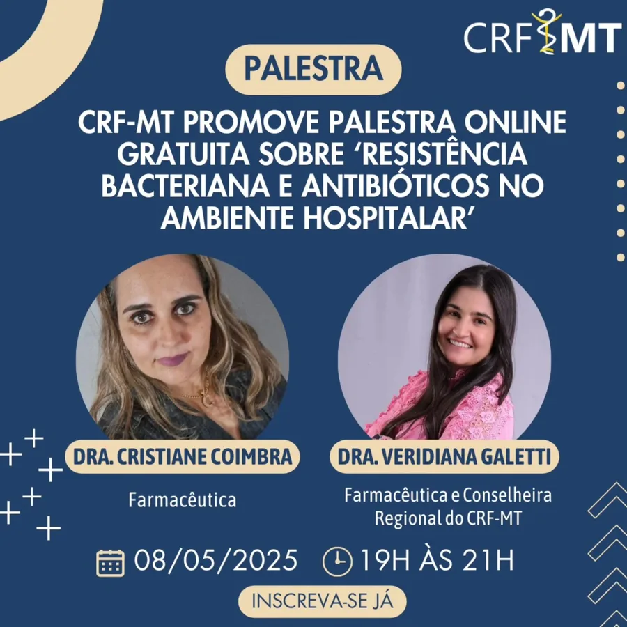
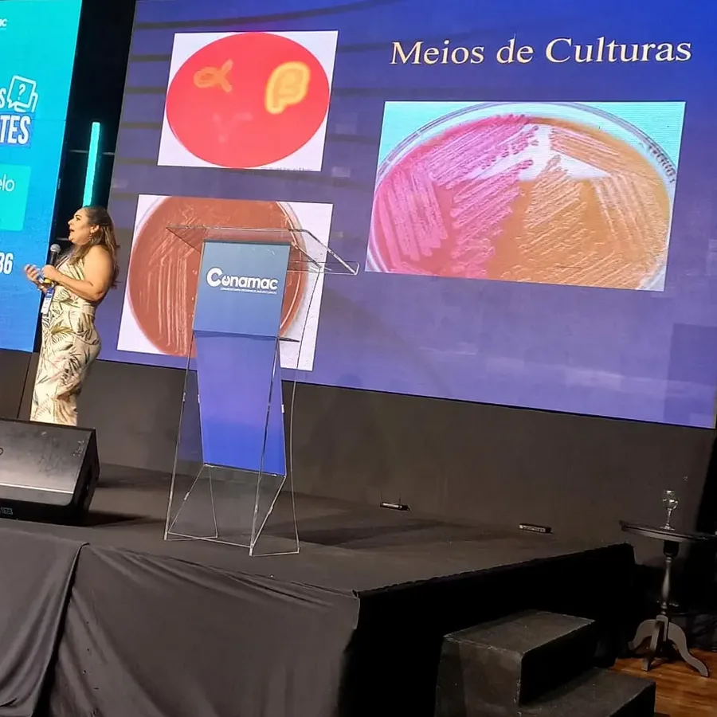
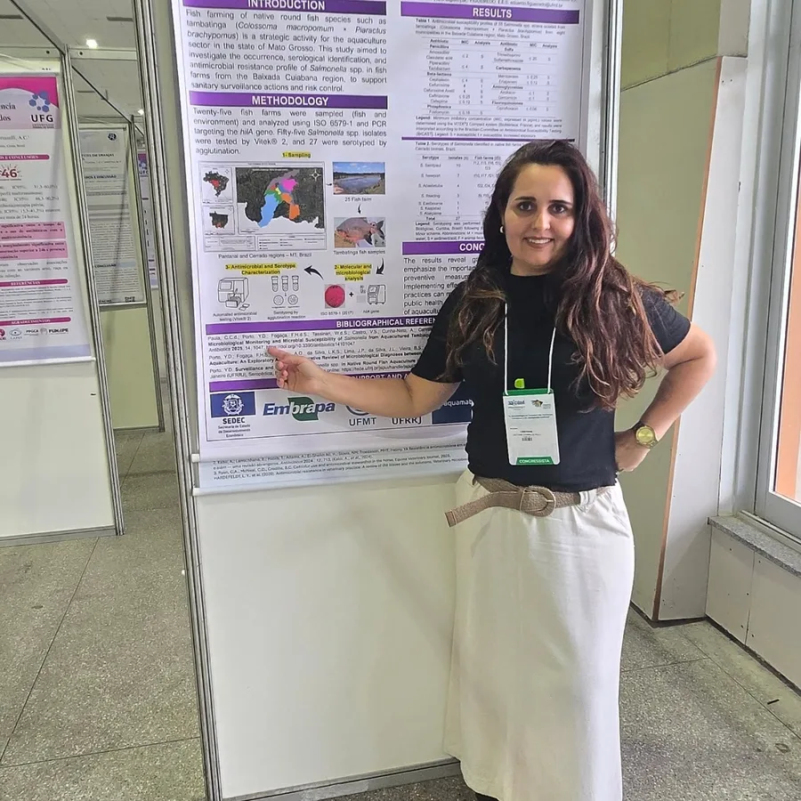
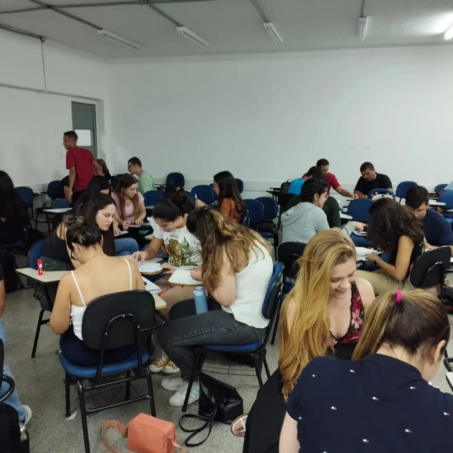
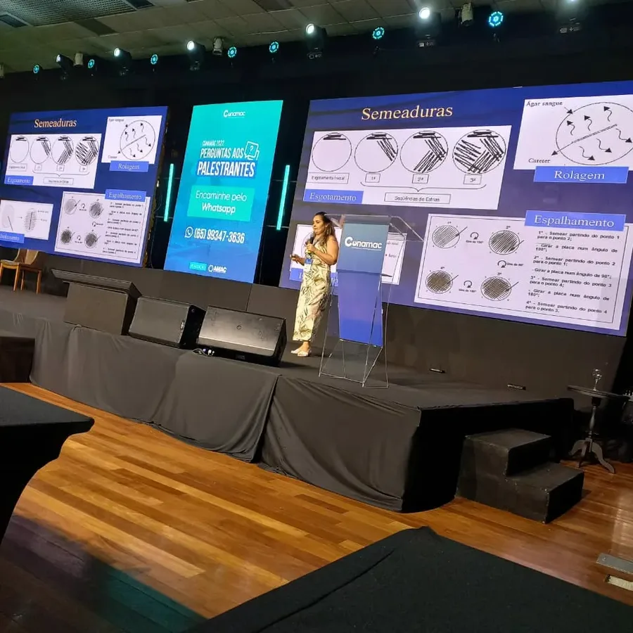

Docência universitária
Microbiologia, Imunologia, Infectologia, Biologia Celular, Biossegurança, Fisiologia e Habilidades Médicas, além da pós-graduação em Análises Clínicas e Microbiologia.
Farmacêutica Bioquímica · Especialista · Mestre · Doutora
Microbiologista clínica, professora universitária e pesquisadora. Mais de 20 anos entre o laboratório, a sala de aula e a ciência, traduzindo microbiologia para quem precisa entender de verdade.

Sobre
A Dra. Cristiane é formada em Farmácia e Bioquímica pela UNICENP (Positivo), especialista em Microbiologia e Micologia pela PUC-PR e em Docência do Ensino Superior pela Univag. É Mestre em Ciências da Saúde pela UFMT, com pesquisa em plantas medicinais de ação antimicrobiana, e Doutora em Biociência Animal pela Universidade de Cuiabá.
Atua como microbiologista no Laboratório Carlos Chagas, do Grupo Sabin, e é professora universitária na UNIVAG, onde leciona Microbiologia, Imunologia, Infectologia, Biologia Celular, Biossegurança, Fisiologia e Habilidades Médicas. Também leciona na pós-graduação em Análises Clínicas e Microbiologia.
Nas redes, criou o Microbiologia sem decoreba: um jeito de ensinar que troca a memorização pela compreensão, para estudantes, profissionais da saúde e curiosos.
Ciência em imagens
Curiosidade, observação e os pequenos detalhes que fazem a diferença: o olhar da Dra. Cristiane sobre a microbiologia.



Atuação
Microbiologia, Imunologia, Infectologia, Biologia Celular, Biossegurança, Fisiologia e Habilidades Médicas, além da pós-graduação em Análises Clínicas e Microbiologia.
Rotina de laboratório no Carlos Chagas, Grupo Sabin: diagnóstico microbiológico, cultura, identificação e perfil de sensibilidade a antimicrobianos.
Artigos científicos, pôsteres e trabalhos sobre resistência bacteriana, infecções urinárias, Salmonella e plantas medicinais com ação antimicrobiana.
Palestrante em eventos de análises clínicas e em ações do CRF-MT, levando temas como resistência bacteriana e uso consciente de antibióticos.
Formação
Centro Universitário Positivo (UNICENP).
Pontifícia Universidade Católica do Paraná (PUC-PR).
UNIVAG, Centro Universitário de Várzea Grande.
UFMT. Avaliação da atividade antimicrobiana in vitro e in vivo de plantas medicinais, com bolsa CAPES.
Universidade de Cuiabá. Estudo de cepas de Salmonella spp. de importância clínica humana isoladas de tambatingas criadas em pisciculturas de Cuiabá.
Pesquisa
Artigo científico · 2025
Estudo com 532 amostras de urina positivas analisadas em laboratório de Cuiabá: 81,76% eram enterobactérias, e a E. coli foi a mais prevalente (64,13%). O trabalho aponta alta sensibilidade a carbapenêmicos e resistência importante a ampicilina e amoxicilina.
Paula CC et al. Rev Med (São Paulo). 2025;104(1):e-228137.
Ler o artigo (DOI)Artigo de opinião · 2025
Publicado no portal Cidadão Consumidor, o texto explica por que o diagnóstico microbiológico é a base de um tratamento correto e como o uso inadequado de antibióticos alimenta a resistência bacteriana.
Ler o artigo
Produção científica
Artigos em revistas nacionais e internacionais, relatos de caso e trabalhos de educação médica. Use os filtros para encontrar o que procura.
Microbiology Research Journal International, 36(2), 96-117
Reviews in Aquaculture, 18, e70136
Journal of Advances in Microbiology Research, 7(3), 39-49
NEXRES, 12, 102186
Antibiotics (MDPI), 14
International Journal of Family & Community Medicine, 9(4), 108-110
Journal of Media Critiques, 11(28), 01-13
Clinical Chemistry, 71(S1), i105 (resumo)
Anais do 9º Workshop de Boas Práticas Pedagógicas do Curso de Medicina, UNIVAG
Research in Veterinary Science, 183, 105504
Revista de Medicina (São Paulo), 104(1), e-228137
Nutrition, 117, 112251
International Journal of Current Microbiology and Applied Sciences, 13(3), 1-26
Revista Saúde (Santa Maria), 50
International Journal of Health & Medical Research, 3(2), 59-78
Connection Line, n. 31
Revista Saúde (Santa Maria), 50(1)
Connection Line, n. 31
Connection Line, n. 32
Caderno de Publicações Univag, n. 14
Anais do 8º Workshop de Boas Práticas Pedagógicas do Curso de Medicina, UNIVAG
Advances in Microbiology, 13, 1-23
Global Journal for Research Analysis, 12(4)
Anais do 7º Workshop de Boas Práticas Pedagógicas do Curso de Medicina, UNIVAG
Anais do 7º Workshop de Boas Práticas Pedagógicas do Curso de Medicina, UNIVAG
Anais do 7º Workshop de Boas Práticas Pedagógicas do Curso de Medicina, UNIVAG
IV Simpósio de Iniciação Científica e Tecnológica EaD (IV SIMPICT-EAD), Anhanguera / UNOPAR
IV Simpósio de Iniciação Científica e Tecnológica EaD (IV SIMPICT-EAD), Anhanguera / UNOPAR
IV Simpósio de Iniciação Científica e Tecnológica EaD (IV SIMPICT-EAD), Anhanguera / UNOPAR
IV Simpósio de Iniciação Científica e Tecnológica EaD (IV SIMPICT-EAD), Anhanguera / UNOPAR
Nenhum trabalho com esses filtros. Escolha outra combinação.
Os trabalhos de evento foram apresentados em simpósios e workshops acadêmicos. Os links levam ao DOI do artigo na página da revista.
Palestras e eventos





Conteúdo
Vídeos curtos que explicam antibióticos, bactérias, cultura e Gram de um jeito que fica na cabeça. Sem decorar, entendendo.
Contato
Convites para palestras, aulas, parcerias e projetos em microbiologia e análises clínicas. Escreva uma mensagem e a Dra. Cristiane responde.
Conteúdo de caráter educativo e informativo. Não substitui consulta, diagnóstico ou orientação de um profissional de saúde.